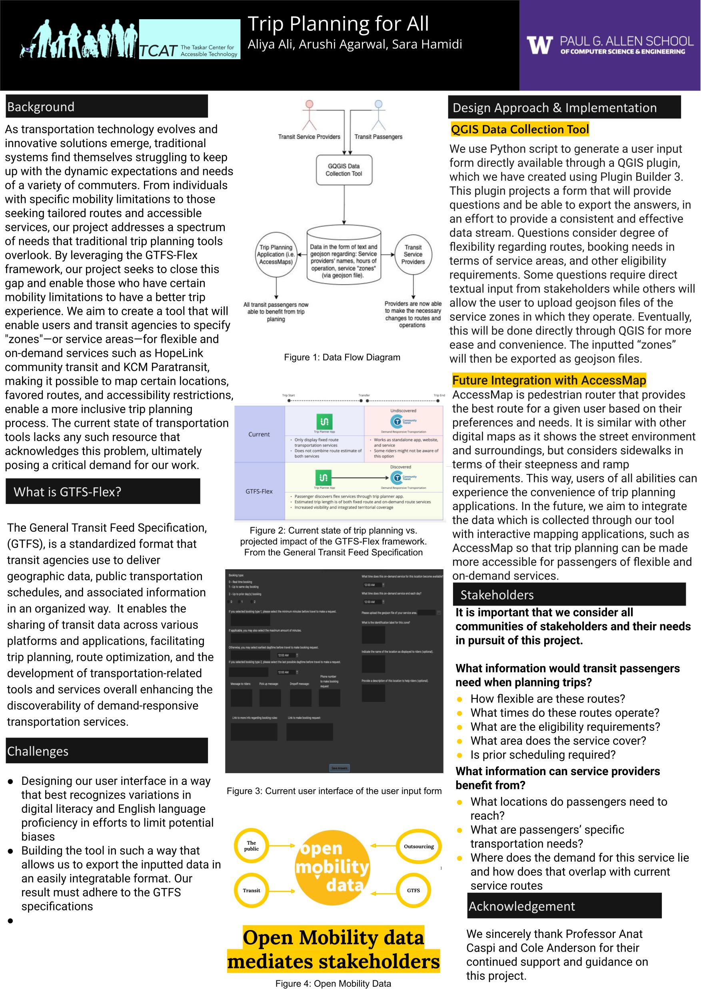

ABOUT
I am Sara, a masters student in the Computational Social Science program at UC San Diego. I am fascinated by the intersection of human rights and technology, with a particular focus on social networks and deep learning. My capstone project revolves around ideal point estimation, combining tabular and non-tabular data through the use of autoencoders. I am motivated by the increasing threats to human rights, including growing political polarization and inequalities in the civic space.
CV
Details about CV...
RESEARCH
Working Papers
DeepNominate: Deep Learning for Ideal-Point Estimation
PROJECTS
Trip Planning For All
The aim of the "Trip Planning for All" project was to develop a data collection tool allowing transit agencies to collect their own user data instead of relying on timely, and costly outsourcing efforts. With the use of QGIS, Java, and JavaScript, we embedded a tool with interactive mapping to support trip planning applications.

Happy Paws
The project "happy paws" was developed as a capstone project at the University of Washington, Information School. It is a website catered towards Gen Z to promote the development of healthy habits, self-reflective journaling, and mood tracking. Built using HTML, CSS, JavaScript, React, Firebase, and Node.js, the platform aims to foster mental wellness through a user-friendly, supportive, and engaging online environment. Below, you will find the final presentation for this project.